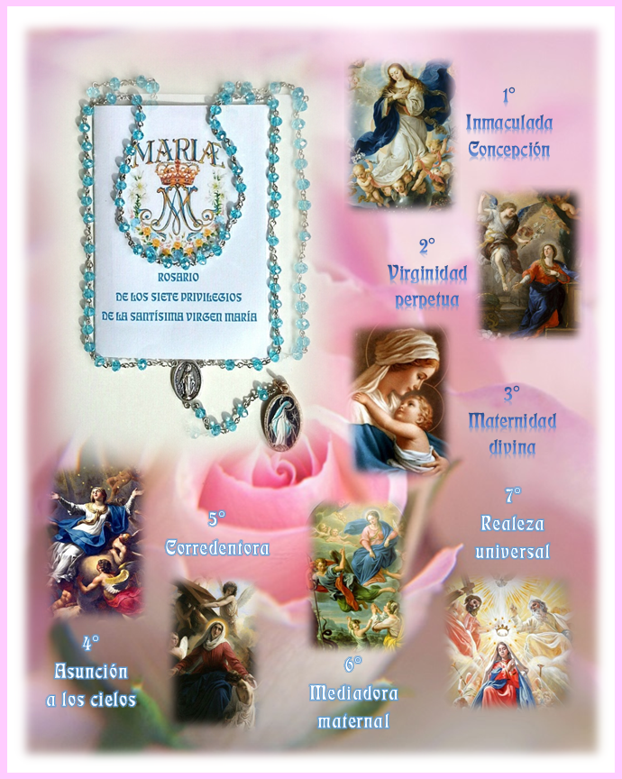

El Rosario de los Siete Privilegios de la Santísima Virgen María
El Rosario de los Siete Privilegios de la Santísima Virgen María es un rezo de alabanza a nuestra Madre por las grandezas que Dios obró en Ella y por las cuales fue bendita y distinguida entre todas las mujeres; y a la vez un acto de reparación por el desamor y desprecio de que muchos la hacen objeto.
Muchas personas aman y veneran a la Virgen, pero la mayoría desconocen estos siete Privilegios, de los cuales cuatro están proclamados como dogmas por la Iglesia — verdades de fe fundamentadas en la Palabra de Dios.
Consideramos un acto de justicia para con nuestra Madre propagar estos Privilegios y dar a conocer las maravillas realizadas por Dios en María Santísima, para que cada día sea más conocida y amada por todos sus hijos.
Obra de Amor, como promotora de esta devoción, se compromete a tener a diario en sus oraciones a las personas que hagan el compromiso de rezar cada sábado este rosario. El compromiso es por un año, renovable. Estas personas forman parte del grupo Laudate Mariam.
El rosario consta de siete grupos de siete cuentas, correspondientes a cada uno de los siete Privilegios, con cuentas intermedias y un tramo final de cinco cuentas.


Comenzamos santiguándonos y a continuación hacemos el ofrecimiento, la petición por la cual vamos a rezar y el Acto de amor y consagración.
Después se rezan las oraciones correspondientes a los siete Privilegios.
Cada Privilegio consta de tres invocaciones con sus respuestas:
La primera invocación, en la cuenta intermedia, nos da a conocer la esencia del Privilegio. La segunda invocación contiene una petición a nuestra Madre, que se repite siete veces. La tercera es una alabanza a la Trinidad.
Las cinco cuentas finales corresponden: la primera a la oración final, tres a la invocación «Honor, alabanza y amor a Santa María», y la última a la jaculatoria «Ave María purísima». Se termina besando con devoción la medalla del rosario.

Únete al grupo Laudate Mariam y comprométete a rezar este rosario cada sábado durante un año. Las monjas rezarán diariamente por ti.
Unirse al grupo